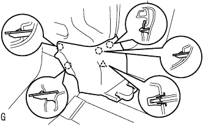
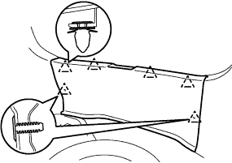
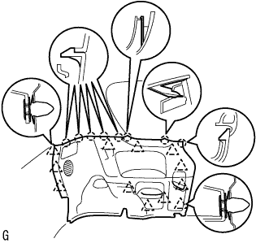
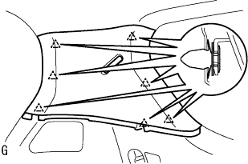
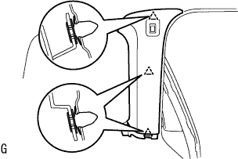
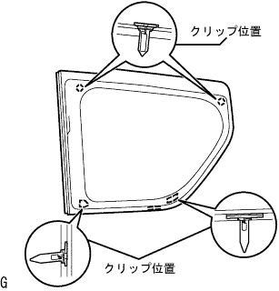
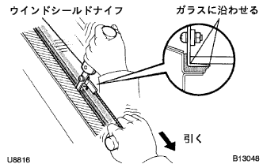
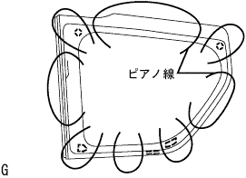

クォータ ウインドウASSY LH 取り外し |
| 1. リヤシートバックASSY取りはずし |
リヤシートバツクを前倒位置にする。
 |
ボルト2本取り付け部のクリップをはずす。
 |
リヤシートバツクカバーをめくりボルト2本をはずし、リヤシートバツクASSYを取りはずす。
| 2. リヤシートクッションASSY取りはずし |
前部のロックのレバーを図の矢印の方向に押してかん合をはずす。
リヤシートベルトを、リヤシートクッションカバー & パッド後部のゴムバンドに通す。
 |
リヤシートクッションASSY後部のフックのかん合をはずし、リヤシートクッションASSYを取りはずす。
| 3. リヤシートバック ヒンジSUB-ASSY LH取りはずし |
ボルトをはずし、リヤシート バツク ヒンジ LHを取りはずす。
| 4. リヤシートバックASSY RH取りはずし |
| 5. リヤシートバックASSY LH取りはずし |
リヤシートバツクを前倒位置にする。
 |
ボルト2本取り付け部のクリップをはずす。
|
リヤシートバツクカバー下部をめくりボルト2本をはずし、リヤシートバツクを取りはずす。
| 6. リヤシートクッションASSY取りはずし |
リヤシートクッションASSY前側をリヤシート クッション ロック ストライカにロックさせる。
 |
リヤシートバックヒンジRHよりスナップリングを取りはずす。
リヤシートクッションASSY右側ブラケットの、リヤシートヒンジRHを引き抜いて取りはずす。
 |
ボルトをはずし、リヤシ－トヒンジLHを取りはずす。
リヤシートクッションASSYのリヤシート フックASSY RHを引き、リヤシートクッションASSY前部のかん合をはずす。
リヤシートベルトを、リヤシートクッションカバー & パッド後部のゴムバンドに通す。
リヤシートクッションASSYを取りはずす。
| 7. フロントドアスカッフ プレート LH取りはずし |
 |
手で上方に引いて車両後方からツメのかん合をはずし、フロントドアスカツフプレートLHを取りはずす。
| 8. デッキサイドトリム カバー FR LH取りはずし |
|  |
手で車両前方に引いてツメのかん合をはずし、デツキサイドトリムカバーFR LHを取りはずす。
| 9. リヤドア オープニングトリム ウェザストリップ LH取りはずし |
| 10. バックドア ウエザストリップ取りはずし |
| 11. リヤフロア カーペット取りはずし |
| 12. スペアホイール カバーASSY取りはずし |
| 13. バックドアスカッフ プレート取りはずし |
|  |
クリップ2個を取りはずす。
トリムカバー端部より手で上方に引き、クリップのかん合をはずしてバツクドアスカツフプレートを取りはずす。
| 14. リヤシート3ポイントタイプ ベルトASSY OUT LH取りはずし（フロアアンカ部） |
ボルトをはずし、リヤシート 3ポイントタイプ ベルトASSY OUT LH（フロアアンカ部）を取りはずす。
| 15. デッキトリムサイド パネルASSY LH取りはずし |
|  |
サイドボードを手で車両内側方向に引き、クリップおよびツメのかん合をはずし、デツキトリムサイドパネルASSY LＨを取りはずす。
| 16. ルーフサイド ガーニッシュ INN LH取りはずし |
|  |
ガーニッシュを手で車両内側方向に引き、クリップのかん合をはずして、ルーフサイドインナガーニッシュLHを取りはずす。
| 17. センタピラー ガーニッシュ LH取りはずし |
|  |
ガーニツシユを手で車両内側方向に引き、クリップのかん合をはずす。
コネクタを切り離し、センタピラーガーニッシュLHを取りはずす。
| 18. クォータ ウインドウASSY LH取りはずし |
|  |
コネクタを切り離す。
吸引ゴムをガラスに取り付ける。
ガラス外周のボデー面および室内側に保護テープを貼る。
接着部に石けん水を十分に塗布する。
|  |
接着部にウインドシールドナイフを差し込む。
刃先とガラス端部を直角に保持しながら、ウインドシールドナイフの刃をガラス面および端部にあわせるようにしてガラス端部と平行に引いて切り離す。
|  |
図のようにピアノ線(0·6ｍｍが適当)を通し、両端をマイティプラーに取り付ける。
ピアノ線を交互に引いてピンを残し接着部を切断する。
室内側からプライヤーなどで一部ピンのかん合をはずす。
吸引ゴムを持ってピンのかん合をはずし、クオータウインドウガラスＬＨを取りはずす。